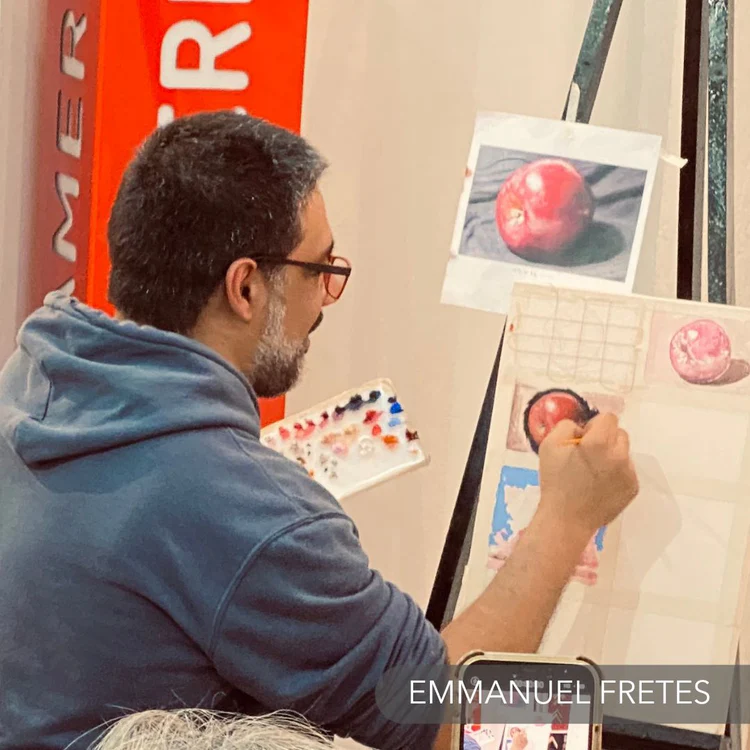

Emmanuel Fretes Roy
Asunción, Paraguay · 1979

Emmanuel Fretes Roy en su estudio, Asunción.
Un artista autodidacta entre la tradición y la modernidad
Nacido en Asunción en 1979, Emmanuel Fretes Roy es un artista plástico paraguayo que desarrolló su talento de manera autodidacta. Su obra, de una profunda riqueza conceptual, explora la identidad, la memoria y el paisaje del Paraguay, creando un universo pictórico donde el color y la materia cuentan historias.
Su formación incluye estudios de Restauración sobre tela, madera y yeso en Bellas Artes de Asunción (2010-11), lo que nutrió su profundo conocimiento de las técnicas y los soportes pictóricos.
Su trabajo ha sido reconocido con importantes galardones, incluyendo el primer premio en el concurso "Henri Matisse" en 2009 y el segundo lugar en 2008. Ya en 1996, había obtenido el primer premio en Pintura Mural "Oñondivepá" de la Municipalidad de Asunción.
Citas del artista
"El que todo ya exista, no quiere decir que no evolucione, pues los cambios nacen, y el creer en sí mismo no produce,g porque es la imaginación la guía de la memoria."
Premios y distinciones
- 2009 · 1° Lugar Premio Matisse
- 2008 · 2° Lugar Premio Matisse
- 1996 · 1° Premio Oñondivepá (Mural), Municipalidad de Asunción
"La imaginación es la guía de la memoria, y la pintura, mi religión única."
— Emmanuel Fretes RoyExposiciones destacadas
Galería Fábrica, Asunción
Galería Fábrica, Asunción
Galería Matices, Asunción
Galería Arte Actual, Asunción
Embajada de Paraguay, París, Francia
MOYA (Museum of Young Art), Viena, Austria